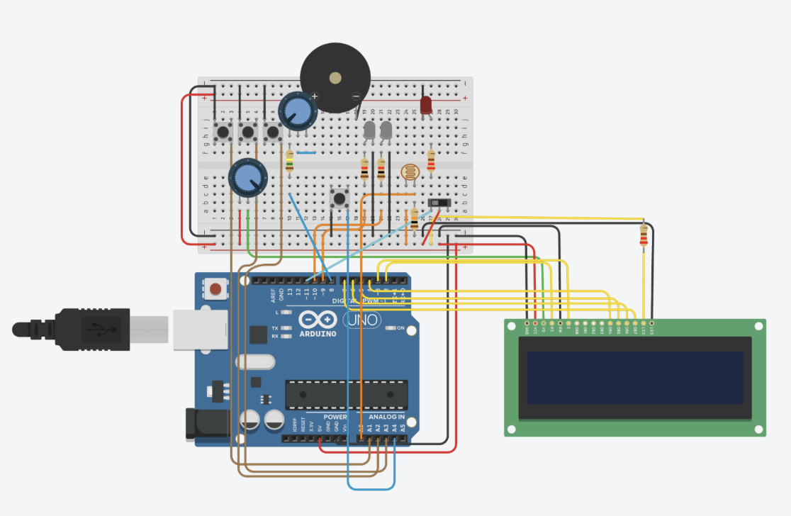
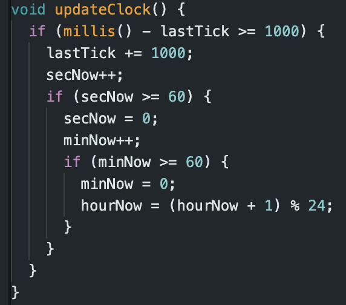
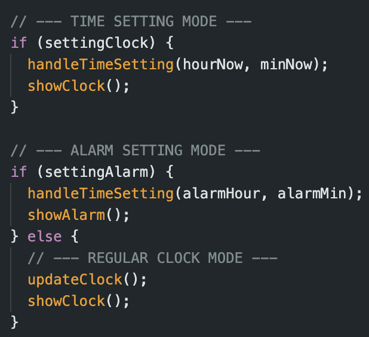
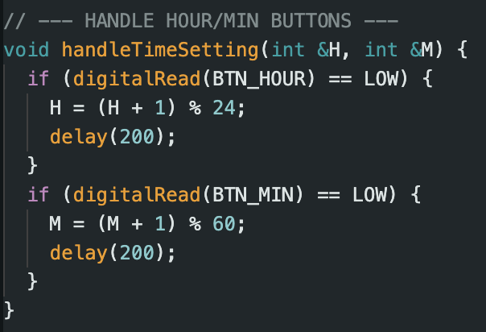
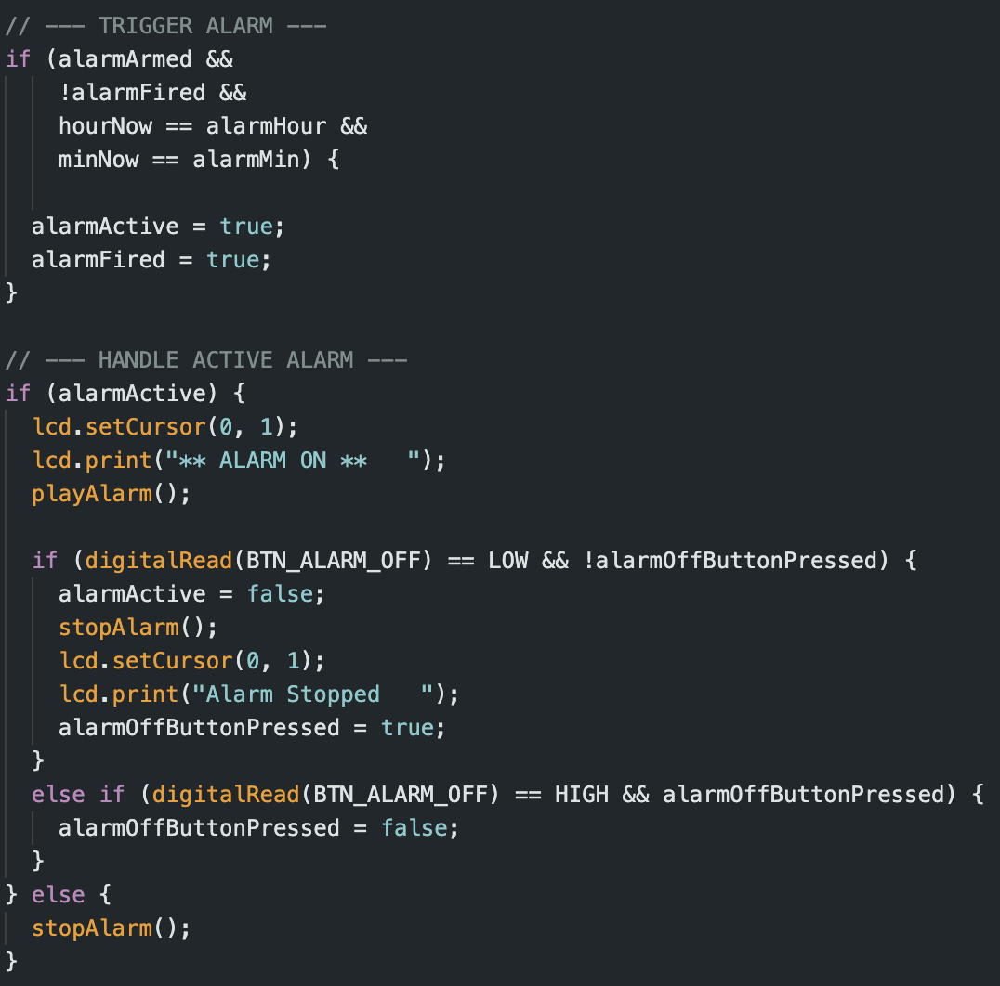
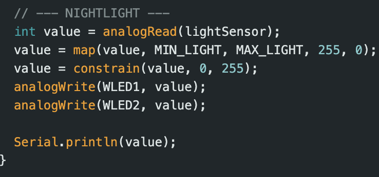
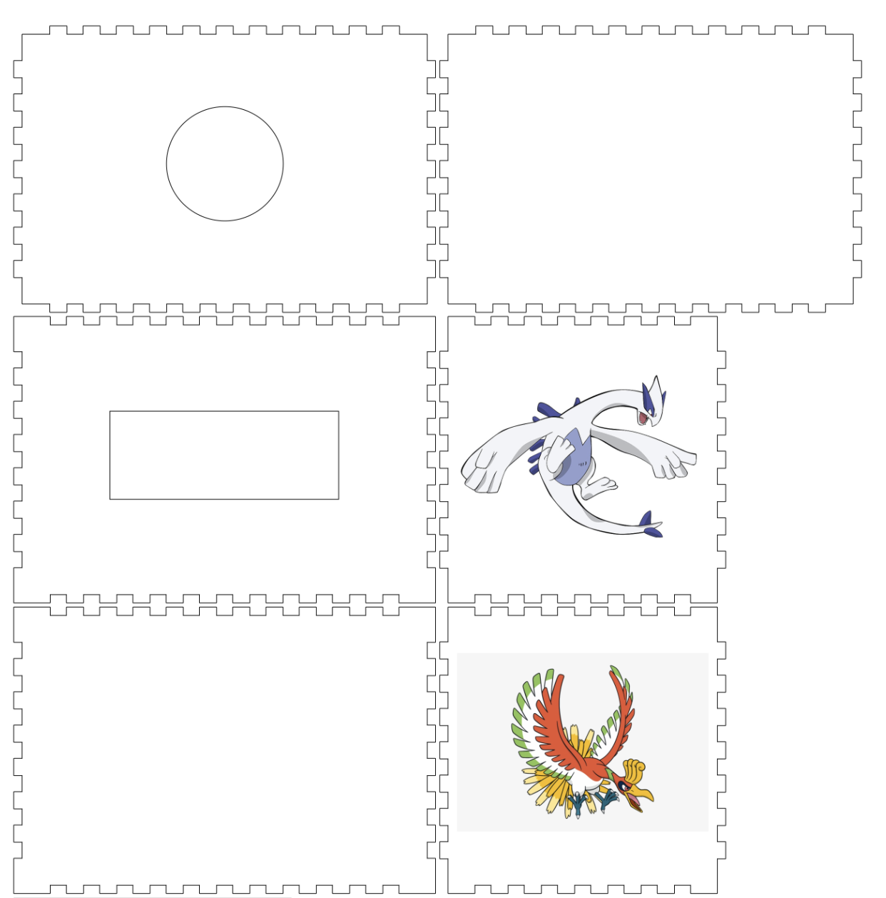
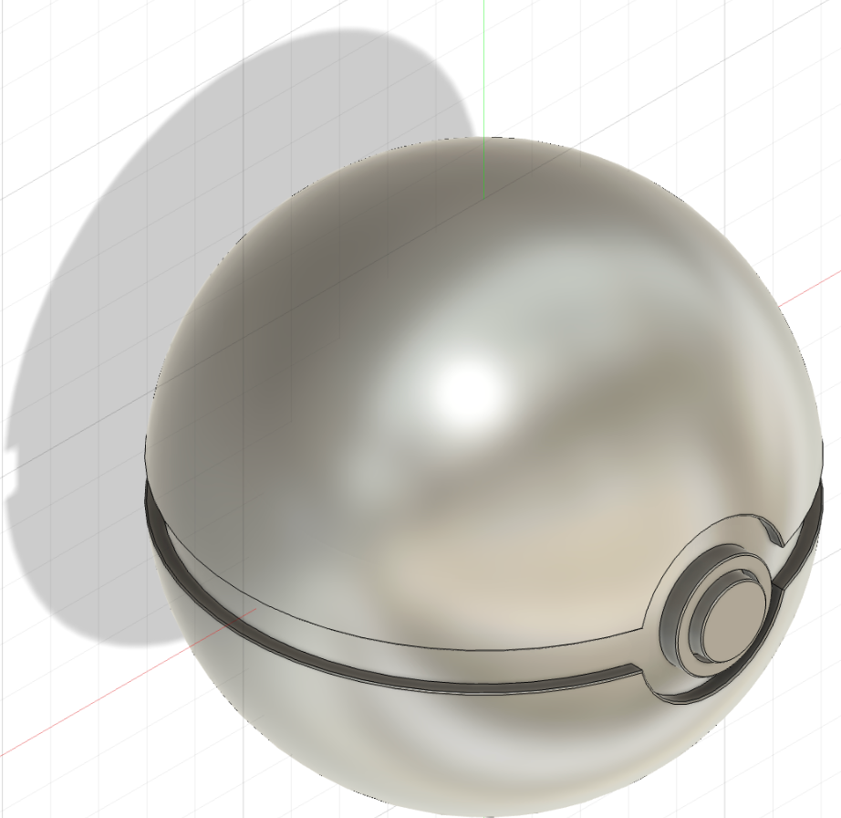
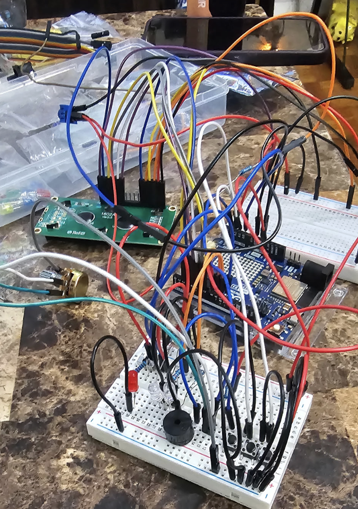
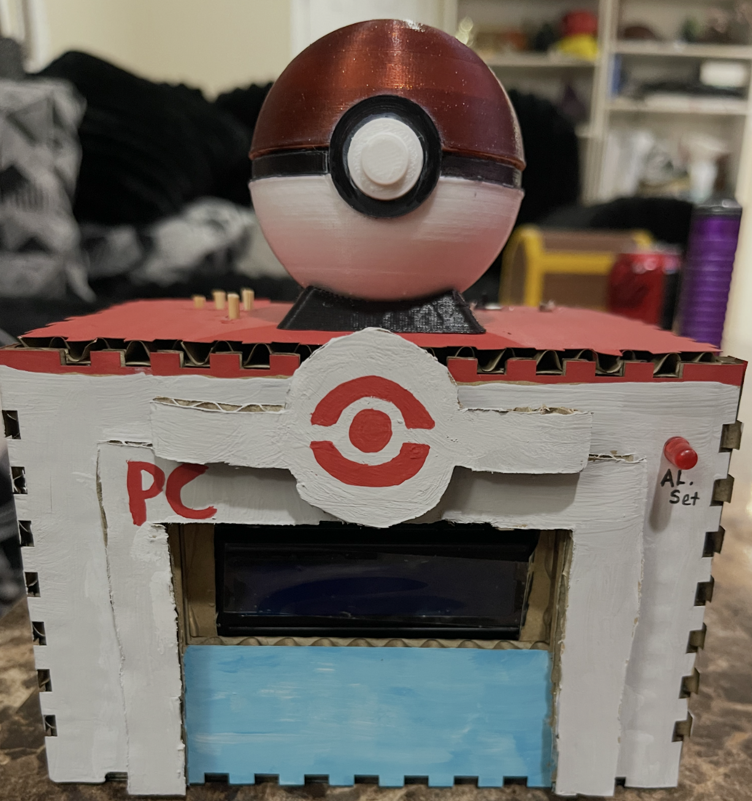

Llama3.1 Powered Discord Chatbot:
Exploring locally hosting LLM's and API integrations.
Technologies used in this Project:
Node
Discord.js
Llama3.1
Local Hosting
Creating the Discord Bot

TinkerCad allowed me to prototype the circuit and test the Arduino code before assembling the physical hardware.
The primary structural components of the circuit are the Arduino microcontroller, a breadboard for mounting and connecting components, and an LCD screen. These components must be arranged so they fit within the alarm clock housing.
The user controls consist of two potentiometers (rotary knobs): one adjusts the alarm volume, while the other controls the display brightness.
Four push buttons provide the clock's input controls. Two buttons adjust the hour and minute values, one cycles between the clock's operating modes (such as setting the time or alarm), and the fourth button silences the alarm while it is sounding.
Additional components include the LCD screen for displaying the current time and alarm status, a speaker for the alarm, a toggle switch to enable or disable the alarm, a photoresistor (light sensor) to detect ambient light levels, an LED that indicates when the alarm is enabled, and two LEDs that function as a night light when the surrounding environment becomes dark.
Timekeeping Code

The clock's timekeeping system uses the millis() function to measure elapsed time without relying on delays.
When 1,000 milliseconds have passed since the previous update, the program increments the seconds counter.
Once the seconds reach 60, they reset to 0 and increment the minutes. Likewise, when the minutes reach 60, they reset and increment the hour.
Internally time is stored using the 24-hour format. Before displaying the time on the LCD, the hour value is converted to a 12-hour format using the modulus operator, and the appropriate AM or PM indicator is displayed.
User Input

The clock uses a simple state machine to know which mode it is currently in.
Depending on the state helper functions for setting time or setting the alarm will be called.
If the clock is in neither of these states, time is updated and shown.

The handle time function receives a reference to the current hours and minutes.
When the user pushes either the hour or minute button, the value is incremented by 1.
A short delay is added for convenience of setting the time accurately.
Alarm System

The alarm logic is evaluated continuously within the program's main loop() function.
Each iteration checks whether the alarm is armed and compares the current time to the stored alarm time. When these conditions are met, the alarm is activated and the buzzer begins sounding.
The alarmFired flag prevents the alarm from repeatedly triggering while the current time remains within the same minute.
Once the clock advances to the next minute, the flag is reset allowing the alarm to activate again on the following day.
Day and Night

The night-light feature uses a photoresistor to measure the surrounding light level. The Arduino continuously reads the sensor's analog value to determine the brightness of the environment.
The sensor reading is mapped to a PWM output value, causing the LEDs to become brighter as the room becomes darker and dimmer as more ambient light is detected.
The mapped value is constrained to the valid PWM range (0–255) before being written to the LEDs, ensuring consistent brightness control.
Physical Design

The alarm clock housing was designed using an online box generator to create laser-cut panels that could be assembled into a prototype enclosure.
Cardboard was chosen as the prototype material because it is inexpensive, easy to cut, and simple to modify, allowing the enclosure dimensions to be adjusted as the internal electronics were arranged.

A custom Poké Ball-inspired enclosure was designed in Autodesk Fusion 360 to house the night-light assembly. The model was then 3D printed and mounted to the top of the alarm clock housing.
Two white LEDs are installed inside the enclosure, creating a soft glow that is automatically controlled by the photoresistor based on the surrounding ambient light.

The housing required the circuit to be broken into parts along two breadboards.

To make the controls accessible through the enclosure, bamboo skewers were attached to the breadboard push buttons, creating simple button extensions that transferred each press from the housing to the underlying switches.
Hot glue was used to securely mount the photoresistor and alarm switch to the housing, ensuring they remained correctly positioned while allowing the prototype to withstand regular interaction.
Finished Clock:

The finished clock prototype was painted in the style of a Pokémon Center with help from my wife and son.
Future Improvements:
In the future I hope to revisit this project and provide a proper housing for the alarm clock using a 3D printed housing.
I also would like to add an amplifier module to make the alarm system louder.
Lessons Learned:
This project reinforced the close relationship between hardware and software, demonstrating how the physical design of a device can directly influence the structure of the code.
Building a working prototype required iterative testing and debugging. Small hardware issues, such as button placement, sensor positioning, and cable routing, often required adjustments to both the enclosure and the software.
Most importantly, this project showed me that successful systems require balancing functionality, usability, and physical design rather than focusing on software alone.